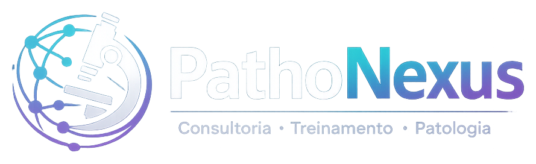

Ineficiência operacional
Fluxos pouco claros, retrabalho e gargalos que impactam margem, previsibilidade e prazo de entrega.

Consultoria • Treinamento • Patologia
A PathoNexus ajuda laboratórios a reduzir retrabalho, melhorar TAT, padronizar processos e escalar equipes com uma abordagem técnico-operacional aplicada à rotina real.
O problema
Fluxos pouco claros, retrabalho e gargalos que impactam margem, previsibilidade e prazo de entrega.
Equipes aprendem “no dia a dia”, sem trilhas, avaliação, padronização ou evidência de competência.
Baixa padronização documental, indicadores frágeis e dificuldade em sustentar evidências para auditorias.
Dependência de pessoas-chave, ausência de banco de talentos e dificuldade em integrar patologia digital.
Soluções
Da leitura do fluxo ao treinamento da equipe, a PathoNexus estrutura entregas claras, aplicáveis e auditáveis.
Avaliação de fluxo, equipe, TAT, qualidade, gargalos e maturidade digital para definir prioridades com clareza.
Intervenção estruturada para padronizar processos, implantar indicadores e reduzir retrabalho em pontos críticos.
Trilhas para técnicos, gestores e patologistas, com conteúdo modular, avaliação contínua e aplicação prática.
Banco de talentos, conexão de especialistas e suporte ao escalonamento de modelos digitais de trabalho.
Método PathoNexus
Entender fluxo, volume, equipe, gargalos, TAT, qualidade e maturidade digital.
Separar problemas críticos de melhorias secundárias, com foco em risco e impacto operacional.
Construir documentos, checklists, indicadores e rotinas de acompanhamento replicáveis.
Transformar processo em competência da equipe, com trilhas e evidência de aprendizagem.
Acompanhar resultados, corrigir desvios e consolidar melhoria contínua.
Máquina de autoridade
Educação e distribuição
Esta landing page foi pensada para receber tráfego do LinkedIn, Instagram, YouTube, congressos e prospecção B2B, convertendo interesse em reuniões de diagnóstico.
Cliente ideal
Quando o volume aumenta e o fluxo atual começa a gerar atraso, retrabalho e dependência excessiva de pessoas-chave.
Quando é necessário integrar operação técnica, corpo médico, qualidade, indicadores e evidências de auditoria.
Quando padronização, treinamento e governança se tornam essenciais para manter consistência entre equipes.
Próximo passo
Preencha as informações abaixo. A equipe PathoNexus retornará com uma proposta de conversa técnica e direcionamento inicial.